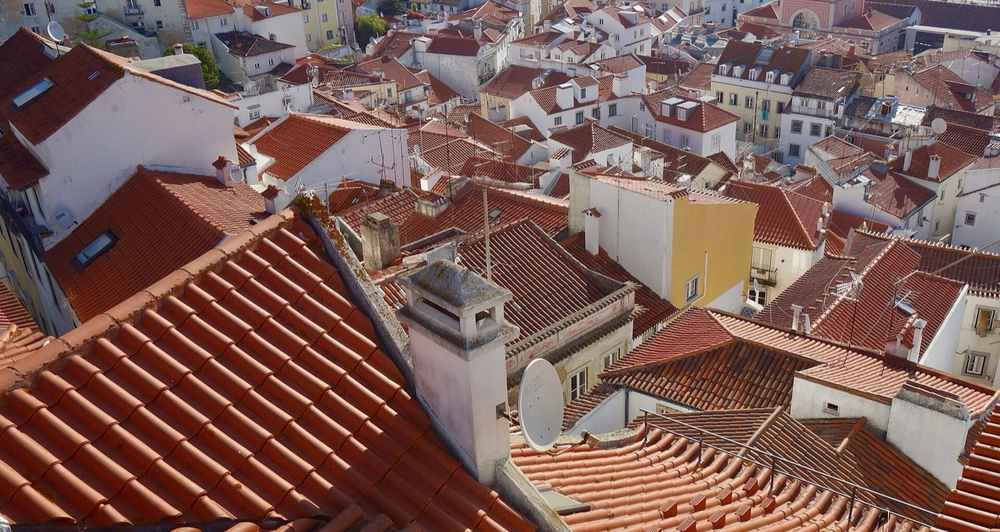
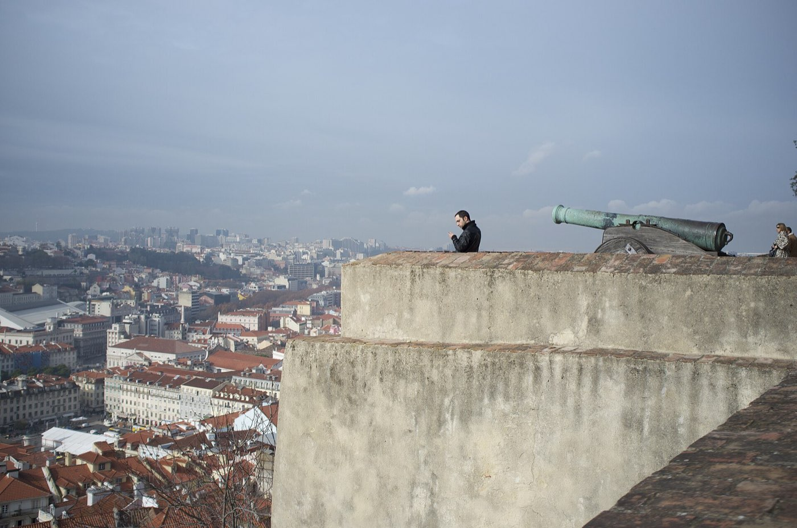
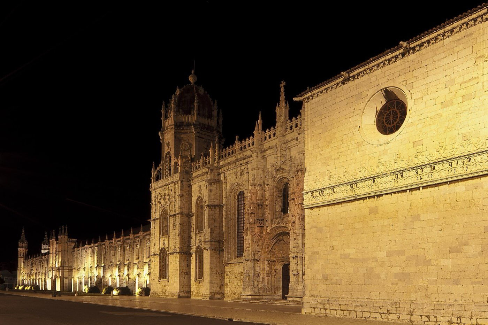
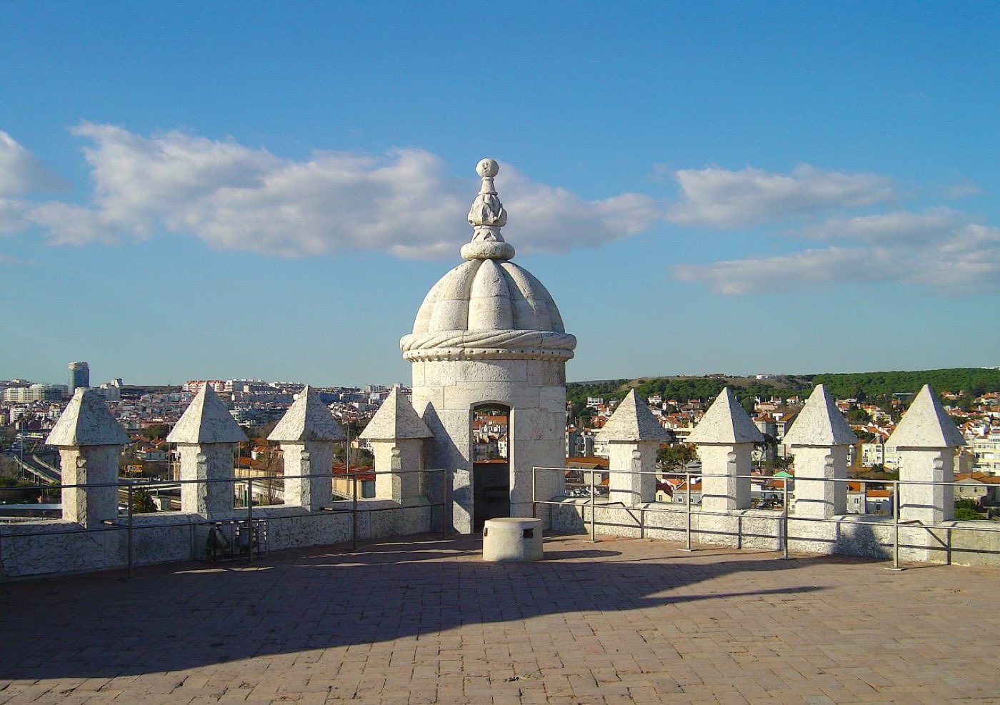

Lisbon · 3 days
3 Days in Lisbon: What You Actually Have to See
Three days is enough for Lisbon's essentials, but only if you group them properly. Here is what genuinely has to be on the list, in the order that saves you the most walking.

Three days covers Lisbon's essentials comfortably: the castle and Alfama, the monuments at Belém, and the Baixa and Chiado hills in the middle. What it does not cover is Sintra, which needs a full day of its own and is the thing most three-day itineraries wrongly try to squeeze in.
The plan below groups everything by neighbourhood. Lisbon is built on hills, and the difference between a well-ordered day and a badly ordered one is roughly two hours of unnecessary climbing.
The maps lie about the hills. A 700 m walk between two viewpoints can be a ten-minute climb on cobbles. Distances here are short; the gradients are not.
Day 1 — The castle and Alfama
Start high and walk down. São Jorge Castle sits at the top of the city's oldest hill, and every other stop on this day is below it — so doing the climb once, first thing, is the whole trick.
Alfama is the medieval quarter that survived the 1755 earthquake, and it is the one part of Lisbon best seen without a plan. Get deliberately lost in it.

The must-sees
All within walking distance of each other, arranged downhill.
Day 2 — Belém
Belém is 6 km west of the centre and holds most of Lisbon's heavyweight monuments in a single riverside strip. It is a half day of sights and a full day if you take it slowly.
Go early. Both major monuments have timed entry and both sell out. The train from Cais do Sodré takes about ten minutes; the riverside tram is slower and prettier, which makes it the better way back.

The must-sees
Book Jerónimos before you travel. It has the worst walk-up queue in the city.

Day 3 — Baixa, Chiado and the viewpoints
The centre is the flattest part of the city and the hills on either side are the steepest. This day alternates between them, which is easier than it sounds if you use the funiculars.
If you want to ride Tram 28, do it at opening or late in the evening. In the middle of the day it is a long queue for a crowded ride.
The must-sees
The flat grid first, then one climb, then sunset.
What it actually looks like
What to prioritise if you lose a day
| Sight | Skippable? | Why |
|---|---|---|
| São Jorge Castle | No | The view that orients you to the whole city |
| Alfama | No | The oldest quarter, and the reason Lisbon looks like Lisbon |
| Jerónimos Monastery | No | The best building in the city, comfortably |
| Pastéis de Belém | No | Ten minutes, and next door to the monastery |
| Belém Tower | Outside only | Impressive from the path; the interior is small and slow |
| Santa Justa Lift | Yes | Long queue for a short ride you can walk around |
| Tram 28 | Yes | Walk the route instead and you will see more of it |
What three days does not cover
Cutting deliberately beats rushing. These need more time than you have:
- Sintra — a full day, not a half day. Rushing it is worse than saving it for a longer trip.
- Cascais — pleasant, and entirely optional on a first visit.
- The big museums (Gulbenkian, Ancient Art) — excellent, and a half day each.
- A second viewpoint circuit — after three miradouros they begin to blur.
Common questions about 3 days in Lisbon
Is 3 days enough for Lisbon?
For the city itself, yes. Three days covers the castle, Alfama, Belém and the Baixa and Chiado hills at a reasonable pace. It is not enough to add Sintra properly, which needs a full day of its own.
What are the must-see attractions in Lisbon?
São Jorge Castle, the Alfama district, Jerónimos Monastery and Belém Tower are the four nobody should miss. After those, the Carmo Convent ruins and a sunset from Miradouro da Senhora do Monte are the strongest additions.
Should I ride Tram 28?
Only in the first hour of service or late in the evening. In the middle of the day it is a long queue for a crowded ride, and walking the same route through Graça and Alfama shows you more of it.
Do I need to book Jerónimos Monastery in advance?
Yes. It is the busiest ticketed sight in Lisbon and the walk-up queue is long for most of the year. Book a timed slot before you travel and arrive near opening.
Is Lisbon walkable?
Very, but it is steep. The distances are short and the hills are not. Budget roughly double the time your map suggests for anything between the river and the castle, and use the funiculars and metro when your legs have had enough.
Tailored to your trip
Travelling to Lisbon? Plan your trip around your real arrival and departure times.
Download iOS App